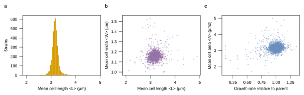
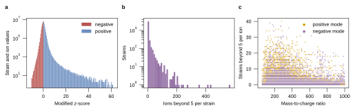

Exploring the E. coli datasets
Four built Escherichia coli K-12 datasets load with one constructor call each. This page reads like a notebook: each cell of code is followed by what it printed or drew, and every cell is a part of one script, ecoli_download_tutorial.py, which runs top to bottom in an empty directory. Where the archives come from, how large they are and how a download is checked is on Downloading the E. coli archives.
Dataset |
Loader |
Label of one record |
Records |
Values per record |
Store slug |
|---|---|---|---|---|---|
Campos 2018, growth rate |
|
maximal growth rate relative to the parent strain |
3,664 |
1 |
|
Campos 2018, imaging |
|
cell-shape and cell-cycle features |
3,664 |
15 |
|
Babu 2014, genetic interaction |
|
S-score of a double mutant |
42,705 |
1 |
|
Fuhrer 2017, metabolome |
|
modified z-score per detected ion |
3,806 |
7,534 |
|
Terms used below:
Hfr Cavalli donor: the E. coli strain that transfers a marked deletion into a recipient by conjugation in the Babu et al. 2014 screen.
Keio collection: the E. coli K-12 BW25113 single-gene deletion strains of Baba et al. 2006, in which a kanamycin-resistance cassette replaces each gene.
modified z-score: the value Fuhrer et al. 2017 release for each strain and ion, summarized over the strain’s replicates and standardized across strains.
record: one stored measurement, a dict with three keys.
experimentholds the genotype, the environment, and the phenotype.referenceholds the genome and the level the value is compared with.publicationholds the identifiers of the source paper.S-score: the signed genetic-interaction score Babu et al. 2014 compute from the colony sizes of a double mutant. A negative score is an aggravating interaction and a positive score is an alleviating one.
Setup
Install torchcell into a Python 3.13 environment (Installation), then import the loaders. Setting TC_DATA_URL makes each loader download its built store from the public endpoint.
import hashlib
import json
import os
import sys
import time
from pathlib import Path
from typing import Any
import matplotlib.pyplot as plt
import numpy as np
import pandas as pd
from matplotlib.figure import Figure
from torchcell.datasets.artifact import content_sha256
from torchcell.datasets.client import DatasetClient
from torchcell.datasets.ecoli.babu2014 import GeneInteractionBabu2014Dataset
from torchcell.datasets.ecoli.campos2018 import (
FEATURE_UNITS,
GrowthRateCampos2018Dataset,
MorphologyCampos2018Dataset,
)
from torchcell.datasets.ecoli.fuhrer2017 import MetabolomeFuhrer2017Dataset
from torchcell.endpoint_http import DEFAULT_URL
from torchcell.utils import PANEL_WIDTHS_MM, PLOT_PALETTE, mm_to_in, panel_label
# A loader downloads its built store only when TC_DATA_URL is set. Without it the loader
# builds the store from the publisher's files, which is the developer path.
os.environ.setdefault("TC_DATA_URL", DEFAULT_URL)
DATA = Path("data/torchcell") # each dataset unpacks into DATA/<slug>/
SECONDS: dict[str, float] = {} # slug -> seconds to download, verify, unpack and open
The plotting cell sets the figure style once. Colors come from the torchcell palette, and each figure is one row of three panels.
ORANGE, RED, PURPLE, YELLOW, BLUE, GRAY = PLOT_PALETTE[:6]
plt.rcParams.update(
{
"font.family": ["Arial", "DejaVu Sans"],
"font.size": 7,
"axes.labelsize": 7,
"axes.titlesize": 7,
"xtick.labelsize": 7,
"ytick.labelsize": 7,
"legend.fontsize": 7,
"axes.linewidth": 0.5,
"xtick.major.width": 0.5,
"ytick.major.width": 0.5,
"legend.frameon": False,
"svg.fonttype": "none", # text stays text in the SVG
"svg.hashsalt": "torchcell", # the same bytes on every run
}
)
FIGURES = Path("figures")
FIGURES.mkdir(exist_ok=True)
def three_panels() -> tuple[Figure, Any]:
"""One row of three panels, 179 mm wide."""
return plt.subplots(
1,
3,
figsize=(mm_to_in(PANEL_WIDTHS_MM["full"]), mm_to_in(54)),
layout="constrained",
)
def save(figure: Figure, name: str) -> None:
"""Letter the panels a to c and write figures/<name>.svg and .png."""
for axis, letter in zip(figure.axes, "abc", strict=True):
panel_label(axis, letter)
figure.savefig(FIGURES / f"{name}.svg", metadata={"Date": None})
figure.savefig(FIGURES / f"{name}.png", dpi=300)
plt.close(figure)
Growth rate (Campos 2018)
GrowthRateCampos2018Dataset holds one record per Keio strain. The label is the strain’s maximal growth rate in M9 medium with casamino acids and glucose at 30 °C, stored as a ratio to the parent strain BW25113, so the reference level is 1.0.
started = time.perf_counter()
growth = GrowthRateCampos2018Dataset(root=str(DATA / "ecoli_growth_rate_campos2018"))
SECONDS["ecoli_growth_rate_campos2018"] = time.perf_counter() - started
print(f"{len(growth):,} records")
3,664 records
One record, field by field:
record = growth[0] # a dict with three keys: experiment, reference, publication
deletion = record["experiment"]["genotype"]["perturbations"][0]
environment = record["experiment"]["environment"]
phenotype = record["experiment"]["phenotype"]
print("gene ", deletion["perturbed_gene_name"], deletion["systematic_gene_name"])
print("strain ", deletion["collection"], "plate", deletion["construction"]["plate"])
print("medium ", environment["media"]["name"])
print(
"temperature",
environment["temperature"]["value"],
environment["temperature"]["unit"],
)
print(
"fitness ", phenotype["fitness"], "from", phenotype["n_samples"], "growth curve"
)
print("wild type ", record["reference"]["phenotype_reference"]["fitness"])
print("genome ", record["reference"]["genome_reference"]["assembly_accession"])
print("source ", record["publication"]["doi_url"])
gene hchA BW25113_1967
strain Keio collection plate 1
medium M9 with 0.1% (w/v) casamino acids and 0.2% (w/v) glucose (Campos 2018)
temperature 30.0 Celsius
fitness 1.0201256910920211 from 1 growth curve
wild type 1.0
genome GCA_000750555.1
source https://doi.org/10.15252/msb.20177573
All records as a table:
rows = []
for r in (growth[i] for i in range(len(growth))):
deletion = r["experiment"]["genotype"]["perturbations"][0]
rows.append(
{
"gene": deletion["perturbed_gene_name"],
"locus_tag": deletion["systematic_gene_name"],
"plate": int(deletion["construction"]["plate"]),
"fitness": r["experiment"]["phenotype"]["fitness"],
}
)
growth_table = pd.DataFrame(rows)
print(growth_table.head(6).to_string(index=False, float_format="{:.4f}".format))
print(
"fitness min {:.4f} median {:.4f} max {:.4f}".format(
growth_table["fitness"].min(),
growth_table["fitness"].median(),
growth_table["fitness"].max(),
)
)
gene locus_tag plate fitness
hchA BW25113_1967 1 1.0201
bglG BW25113_3723 1 1.1317
cytR BW25113_3934 1 0.8306
fnr BW25113_1334 1 0.9604
hupB BW25113_0440 1 1.0240
nagC BW25113_0676 1 0.9816
fitness min 0.1218 median 1.0042 max 1.3514
figure, (left, middle, right) = three_panels()
left.hist(growth_table["fitness"], bins=np.arange(0.10, 1.38, 0.02), color=ORANGE)
left.axvline(1.0, color="black", linewidth=0.5, linestyle="--")
left.set(xlabel="Growth rate relative to parent", ylabel="Strains")
ranked = growth_table.sort_values("fitness").reset_index(drop=True)
middle.plot(ranked.index + 1, ranked["fitness"], color=ORANGE, linewidth=1)
for rank, row in ranked.head(5).iterrows():
middle.annotate(
row["gene"],
(rank + 1, row["fitness"]),
xytext=(600, 0.15 + 0.11 * rank),
fontstyle="italic",
va="center",
arrowprops={"arrowstyle": "-", "linewidth": 0.3},
)
middle.set(xlabel="Strain rank", ylabel="Growth rate relative to parent")
plates = growth_table.groupby("plate")["fitness"].quantile([0.25, 0.5, 0.75]).unstack()
right.vlines(plates.index, plates[0.25], plates[0.75], color=ORANGE, linewidth=1)
right.plot(plates.index, plates[0.5], "o", color="black", markersize=1.5)
right.axhline(1.0, color="black", linewidth=0.5, linestyle="--")
right.set(xlabel="Keio plate", ylabel="Growth rate relative to parent")
save(figure, "ecoli_growth_rate_campos2018")

Fig. 8 Growth rate of the Keio strains in GrowthRateCampos2018Dataset. a, strains per 0.02-wide bin of growth rate relative to the parent, with the parent level of 1.0 dashed. b, the strains ranked from slowest to fastest, with the five slowest named. c, the median (dot) and the interquartile range (bar) of the strains on each Keio plate.
The same record as typed objects
dataset[i] returns plain dicts. transform_item validates one record through the pydantic classes of the schema and returns the typed objects.
typed = growth.transform_item(record) # the same record as validated pydantic objects
experiment = typed["experiment"]
print(type(experiment).__name__, type(experiment.phenotype).__name__)
print(
experiment.genotype.perturbations[0].perturbed_gene_name,
experiment.phenotype.fitness,
)
FitnessExperiment FitnessPhenotype
hchA 1.0201256910920211
Cell shape and cell cycle (Campos 2018)
MorphologyCampos2018Dataset covers the same strains from the same imaging screen. Each record stores the cell-shape means and the cell-cycle features under the symbols the paper gives them, and the coefficients of variation of the shape features in morphology_coefficient_of_variation.
started = time.perf_counter()
morphology = MorphologyCampos2018Dataset(root=str(DATA / "ecoli_morphology_campos2018"))
SECONDS["ecoli_morphology_campos2018"] = time.perf_counter() - started
print(f"{len(morphology):,} records")
phenotype = morphology[0]["experiment"]["phenotype"]
print("cells measured", phenotype["n_samples"])
print("features ", list(phenotype["morphology"]))
3,664 records
cells measured 245
features ['<L>', '<W>', '<A>', '<V>', '<SA>', '<P>', '<C>', '<Ar>', '<SA/V>', '<NA>', 'rho_CD', 'CDN_C0', 'Rel.timing div', 'Rel.timing nuc', '%2N']
morphology_table = pd.DataFrame(
{
"gene": r["experiment"]["genotype"]["perturbations"][0]["perturbed_gene_name"],
**r["experiment"]["phenotype"]["morphology"],
}
for r in (morphology[i] for i in range(len(morphology)))
).set_index("gene")
print("table shape ", morphology_table.shape)
print(
"features per strain:",
morphology_table.notna().sum(axis=1).value_counts().to_dict(),
)
unit = FEATURE_UNITS.value # feature symbol -> unit, as the release states it
print("units ", {symbol: unit[symbol] for symbol in ("<L>", "<W>", "<A>")})
shown = ["<L>", "<W>", "<A>", "<SA/V>", "rho_CD", "%2N"]
print(morphology_table[shown].head(6).to_string(float_format="{:.4f}".format))
table shape (3664, 15)
features per strain: {15: 3422, 9: 242}
units {'<L>': 'µm', '<W>': 'µm', '<A>': 'µm2'}
<L> <W> <A> <SA/V> rho_CD %2N
gene
hchA 3.1955 1.1731 3.2340 4.2067 0.1753 0.3315
bglG 3.1495 1.1772 3.1965 4.1760 0.4017 0.2691
cytR 3.1203 1.2074 3.2240 4.1018 0.5403 0.2903
fnr 3.1126 1.1413 3.0587 4.2452 0.5705 0.3047
hupB 3.3444 1.0857 3.1668 4.3908 0.5330 0.2058
nagC 3.1478 1.1609 3.1520 4.2069 0.7041 0.2982
Some records hold 9 features and not 15: a strain with no nucleoid channel has no nucleoid-derived features, and the table holds NaN there.
The growth-rate dataset holds the same strains in the same order, so the two join by position:
# The two Campos 2018 datasets hold the same strains in the same order, so the growth
# rate of each strain sits beside its cell shape.
assert list(morphology_table.index) == list(growth_table["gene"])
shape_growth = morphology_table.assign(fitness=growth_table["fitness"].to_numpy())
rank_correlation = shape_growth["<A>"].rank().corr(shape_growth["fitness"].rank())
print(f"strains {len(shape_growth):,}")
print(f"Spearman correlation of cell area with growth rate {rank_correlation:.3f}")
strains 3,664
Spearman correlation of cell area with growth rate 0.095
figure, (left, middle, right) = three_panels()
left.hist(morphology_table["<L>"], bins=np.arange(2.0, 4.92, 0.04), color=ORANGE)
left.set(xlabel=f"Mean cell length <L> ({unit['<L>']})", ylabel="Strains")
middle.scatter(
morphology_table["<L>"],
morphology_table["<W>"],
s=1.5,
color=ORANGE,
linewidths=0,
rasterized=True,
)
middle.set(
xlabel=f"Mean cell length <L> ({unit['<L>']})",
ylabel=f"Mean cell width <W> ({unit['<W>']})",
)
right.scatter(
shape_growth["fitness"],
shape_growth["<A>"],
s=1.5,
color=ORANGE,
linewidths=0,
rasterized=True,
)
right.set(
xlabel="Growth rate relative to parent",
ylabel=f"Mean cell area <A> ({unit['<A>']})",
)
save(figure, "ecoli_morphology_campos2018")


Fig. 9 Cell shape of the Keio strains in MorphologyCampos2018Dataset, one point or count per strain. a, strains per 0.04 µm bin of mean cell length. b, mean cell width against mean cell length. c, mean cell area against the growth rate of the same strain from GrowthRateCampos2018Dataset.
Genetic interactions (Babu 2014)
GeneInteractionBabu2014Dataset holds one record per double mutant of the released high-confidence set. The genotype of a record lists two perturbations, one from an Hfr Cavalli donor and one from the recipient array, and the label is the pair’s S-score.
started = time.perf_counter()
interaction = GeneInteractionBabu2014Dataset(
root=str(DATA / "gene_interaction_babu2014")
)
SECONDS["gene_interaction_babu2014"] = time.perf_counter() - started
print(f"{len(interaction):,} records")
record = interaction[0]
phenotype = record["experiment"]["phenotype"]
for perturbation in record["experiment"]["genotype"]["perturbations"]:
print(
"gene ",
perturbation["perturbed_gene_name"],
perturbation["systematic_gene_name"],
"|",
perturbation["collection"],
)
print(
"S-score", phenotype["gene_interaction"], "from", phenotype["n_samples"], "colonies"
)
print("medium ", record["experiment"]["environment"]["media"]["name"])
42,705 records
gene thrA b0002 | Hfr Cavalli (Hfr C) donor query strains
gene dnaJ b0015 | Keio collection
S-score -4.43348 from 8 colonies
medium LB with kanamycin and chloramphenicol, amounts not stated (Babu 2014), solid
The donor is the first perturbation in some records and the second in others, so the collection field of each perturbation, not its position, says which side of the cross it came from.
rows = []
for r in (interaction[i] for i in range(len(interaction))):
first, second = r["experiment"]["genotype"]["perturbations"]
rows.append(
{
"gene_a": first["perturbed_gene_name"],
"gene_b": second["perturbed_gene_name"],
"id_a": first["systematic_gene_name"],
"id_b": second["systematic_gene_name"],
"s_score": r["experiment"]["phenotype"]["gene_interaction"],
}
)
pairs = pd.DataFrame(rows)
print(pairs.head(6).to_string(index=False, float_format="{:.4f}".format))
print("genes in any pair:", len(interaction.gene_set))
print("negative scores:", int((pairs["s_score"] < 0).sum()))
print("positive scores:", int((pairs["s_score"] > 0).sum()))
print("strongest negative pairs:")
print(
pairs.nsmallest(3, "s_score").to_string(index=False, float_format="{:.4f}".format)
)
gene_a gene_b id_a id_b s_score
thrA dnaJ b0002 b0015 -4.4335
thrA caiE b0002 b0035 -4.1931
thrA sfsA b0002 b0146 4.2653
thrA ligT b0002 b0147 -5.2363
thrA yaeQ b0002 b0190 4.9501
thrA metN b0002 b0199 4.2045
genes in any pair: 3880
negative scores: 25239
positive scores: 17466
strongest negative pairs:
gene_a gene_b id_a id_b s_score
oppA topA b1243 b1274 -30.9240
tig accD b0436 b2316 -28.1061
sufC fdx b1682 b2525 -24.9893
figure, (left, middle, right) = three_panels()
edges = np.arange(-32, 25, 1)
negative = pairs["s_score"] < 0
left.hist(pairs.loc[negative, "s_score"], bins=edges, color=ORANGE, label="negative")
left.hist(pairs.loc[~negative, "s_score"], bins=edges, color=RED, label="positive")
left.set(xlabel="S-score", ylabel="Gene pairs")
left.legend()
# One row per gene: how many of its pairs score below zero and how many above.
per_gene = (
pd.concat(
[
pairs[["id_a", "s_score"]].rename(columns={"id_a": "id"}),
pairs[["id_b", "s_score"]].rename(columns={"id_b": "id"}),
]
)
.assign(negative=lambda t: t["s_score"] < 0, positive=lambda t: t["s_score"] > 0)
.groupby("id")[["negative", "positive"]]
.sum()
)
degree = per_gene["negative"] + per_gene["positive"]
middle.hist(degree, bins=np.logspace(0, np.log10(degree.max() + 1), 40), color=ORANGE)
middle.set(xscale="log", xlabel="Scored pairs per gene", ylabel="Genes")
right.scatter(
per_gene["negative"],
per_gene["positive"],
s=1.5,
color=ORANGE,
linewidths=0,
rasterized=True,
)
right.set(
xscale="symlog",
yscale="symlog",
xlabel="Negative pairs per gene",
ylabel="Positive pairs per gene",
)
for axis in (right.xaxis, right.yaxis): # linear from 0 to 1, logarithmic above
axis.set_ticks([0, 1, 10, 100, 1000], labels=["0", "1", "10", "100", "1,000"])
axis.minorticks_off()
save(figure, "gene_interaction_babu2014")

Fig. 10 S-scores in GeneInteractionBabu2014Dataset. a, gene pairs per unit-wide bin of S-score, negative and positive scores colored apart. The release holds only the high-confidence pairs, which leaves the gap around zero. b, genes by the number of scored pairs each takes part in, on logarithmically spaced bins. c, positive against negative pairs per gene, one point per gene, on axes that are linear from 0 to 1 and logarithmic above.
Metabolome (Fuhrer 2017)
MetabolomeFuhrer2017Dataset holds one record per Keio strain. The label is a dict from ion key to modified z-score, with the same ions in the same order in every record, and preprocess/ions.csv gives the mass-to-charge ratio of each key.
started = time.perf_counter()
metabolome = MetabolomeFuhrer2017Dataset(root=str(DATA / "metabolome_fuhrer2017"))
SECONDS["metabolome_fuhrer2017"] = time.perf_counter() - started
print(f"{len(metabolome):,} records")
record = metabolome[0]
levels = record["experiment"]["phenotype"]["metabolite_level"] # ion key -> z-score
print(
"strain ", record["experiment"]["genotype"]["perturbations"][0]["strain_label"]
)
print("ions ", len(levels))
print("first ions ", dict(list(levels.items())[:4]))
ions = pd.read_csv(Path(metabolome.preprocess_dir) / "ions.csv") # ion key -> m/z
print(ions.head(4).to_string(index=False, float_format="{:.5f}".format))
3,806 records
strain aaeA
ions 7534
first ions {'neg_0001': -0.4309, 'neg_0002': -0.1195, 'neg_0003': -0.6621, 'neg_0004': 0.9284}
key mode ion_index deposit_mz table_ev1b_mz
neg_0001 neg 1 56.99716 56.99624
neg_0002 neg 2 57.03575 57.03483
neg_0003 neg 3 57.05741 57.05649
neg_0004 neg 4 58.03895 58.03803
Because every record holds the same ions in the same order, the labels stack into one strains-by-ions matrix:
ion_keys = list(levels)
strains, matrix_rows = [], []
for r in (metabolome[i] for i in range(len(metabolome))):
perturbations = r["experiment"]["genotype"]["perturbations"]
strains.append("+".join(p["perturbed_gene_name"] for p in perturbations))
row_levels = r["experiment"]["phenotype"]["metabolite_level"]
matrix_rows.append([row_levels[key] for key in ion_keys])
matrix = np.asarray(matrix_rows, dtype=np.float32) # strains x ions
print("matrix shape", matrix.shape, matrix.dtype)
corner = pd.DataFrame(matrix[:5, :5], index=strains[:5], columns=ion_keys[:5])
print(corner.to_string(float_format="{:.4f}".format))
print("z-scores beyond 5 in absolute value:", int((np.abs(matrix) > 5).sum()))
print("records that name more than one gene:", sum("+" in name for name in strains))
matrix shape (3806, 7534) float32
neg_0001 neg_0002 neg_0003 neg_0004 neg_0005
aaeA -0.4309 -0.1195 -0.6621 0.9284 -0.6906
aaeB -1.8696 1.1863 1.7171 0.3849 0.7550
aaeR 1.3402 -0.8219 1.0256 2.0786 -0.5455
aaeX 0.2608 -0.5211 0.0221 -0.8930 0.4659
aas 1.1950 0.2000 -0.4579 0.8433 0.5156
z-scores beyond 5 in absolute value: 31863
records that name more than one gene: 21
Some records pool two or three Keio strains. The deposit labels such a column with one name that matches more than one Keio entry, the record’s genotype lists every one of them, and the strain label above joins their gene names with +.
figure, (left, middle, right) = three_panels()
left.hist(matrix.ravel(), bins=np.arange(-11.0, 62.5, 0.5), color=ORANGE)
left.set(yscale="log", xlabel="Modified z-score", ylabel="Strain and ion values")
beyond = np.abs(matrix) > 5
middle.hist(beyond.sum(axis=1), bins=np.arange(0, 580, 10), color=ORANGE)
middle.set(yscale="log", xlabel="Ions beyond 5 per strain", ylabel="Strains")
for mode, color in (("pos", RED), ("neg", ORANGE)):
of_mode = (ions["mode"] == mode).to_numpy()
right.scatter(
ions.loc[of_mode, "deposit_mz"],
beyond.sum(axis=0)[of_mode],
s=1.5,
color=color,
linewidths=0,
rasterized=True,
label={"neg": "negative mode", "pos": "positive mode"}[mode],
)
right.set(xlabel="Mass-to-charge ratio", ylabel="Strains beyond 5 per ion")
right.legend(markerscale=3, loc="upper right")
save(figure, "metabolome_fuhrer2017")


Fig. 11 Modified z-scores in MetabolomeFuhrer2017Dataset. a, all strain and ion values per 0.5-wide bin, on a logarithmic count axis. b, strains by the number of ions whose z-score is beyond 5 in absolute value, in bins of 10 ions. c, for each ion, the number of strains beyond 5 against the ion’s mass-to-charge ratio, colored by ionization mode.
Provenance
Tutorial code:
experiments/034-showcase-datasets/scripts/ecoli_download_tutorial.py.Runs, figures and page fragments:
experiments/034-showcase-datasets/scripts/ecoli_download_tutorial_page.py, which writesexperiments/034-showcase-datasets/results/ecoli_download_tutorial.<host>.jsonper host, and the printed output and figures underdocs/source/datasets/ecoli/_generated/tutorial/.The figures are 179 mm wide with 7 pt Arial text and the first colors of
torchcell.utils.PLOT_PALETTE.The printed output was byte-identical on a repository checkout and on a new environment installed from PyPI (Install timings and release checks).